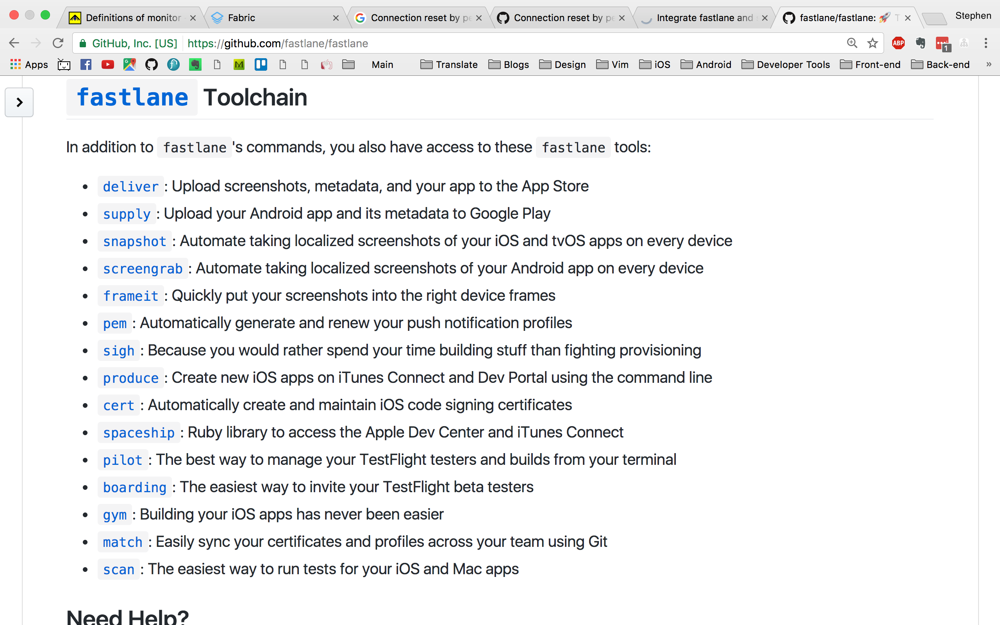
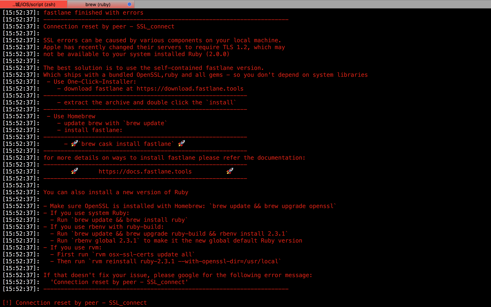

Integrate fastlane and script save your time .
fastlane + slack + bash 一鍵達到多種 .ipa 檔。
使用環境
|
|
自身面臨的情況
因工作所需，需要發布 企業內部使用，並打包成不同形式的 .ipa 上架擋案。換句話說，假設我要產生 10 個 擁有不同 Info.plist 的 .ipa 檔案，如果手動的話我不就要改到死了？每次 Archive 都要等很久，然後結束之後在改 Info.plist 上的參數然再上架。無限迴圈….
本篇分享概要
因為官方文擋其實非常詳細，所以這邊只分享大概流程。
解決自動上架
目前我知道打包除了手動之外，也只能透過xcodebuild來實現，這次就試看看 fastlane 這工具來完成自動打包。
解決自動更新 Info.plist 的參數
這邊我打算使用 bash 來達到變更 Info.plist 內部參數，附帶一題，這邊情況適用我自己而已，其實任何在專案內部的檔案，圖片都可以進行變更。 It’s all depend on you.
結合兩者 Fastlane + bash
步驟1：完成 Fastlane 的安裝
- 安裝 homebrew
|
|
- 透過 homebrew 來安裝 fastlane
|
|
步驟2：Fastlane 的初始化設定
- 第一種：(建議）
透過 官方提供的文檔來產生初始化的程式碼
- 第二種：開啟 Terminal 到當前 iOS 的資料夾下，並且跟著輸入帳號跟相關的資料
|
|
那兩種哪邊不一樣呢？，第一種其實已經幫你把程式碼初始化了，讓你少去比較多的步驟，接著我們打開 Fastlane 來看一下的 Code。
|
|
其實他的公式非常簡單，就是把上面我打中文的地方替換成所需要的參數，那方法有哪些呢？依造官方有很多，比如 deliver 或者 supply 之類的…

那方法的參數有哪些呢？請在 Terminal 打上 fastlane action [方法]，比如我想要看 supply 有哪些參數，那就
|
|

- 接著就慢慢看囉～想要什麼自己選。在依序填入到上面的公式
TroubleShooting
Connection reset by peer - SSL_connect
- 因為我的 ruby 版本是 2.0.0，蘋果最近把服務器的TLS版本更新到 TLS 1.2，在我當前的 ruby 是不支持的

Reference
sudo gem update –system
(brew uninstall –force ruby)[]
(rbenv)[https://github.com/rbenv/rbenv]
https://fabric.io/features/distribution?utm_campaign=github_readme